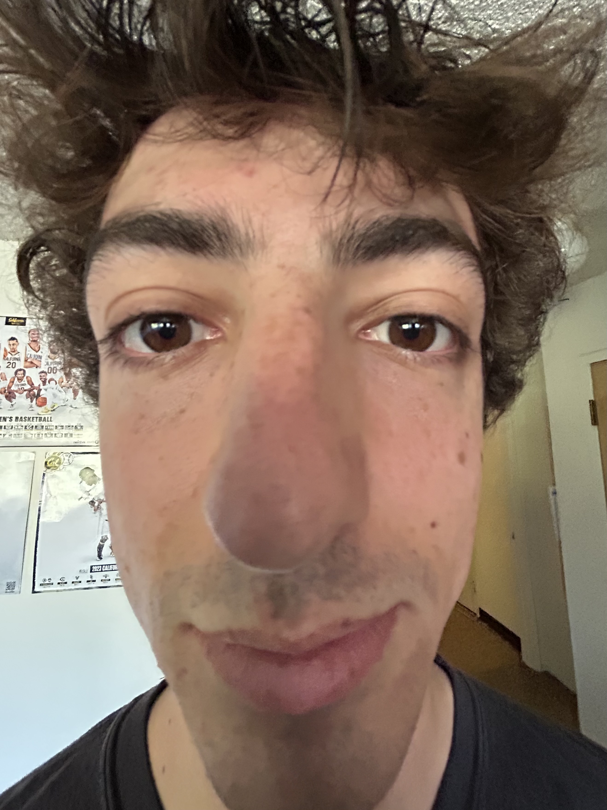
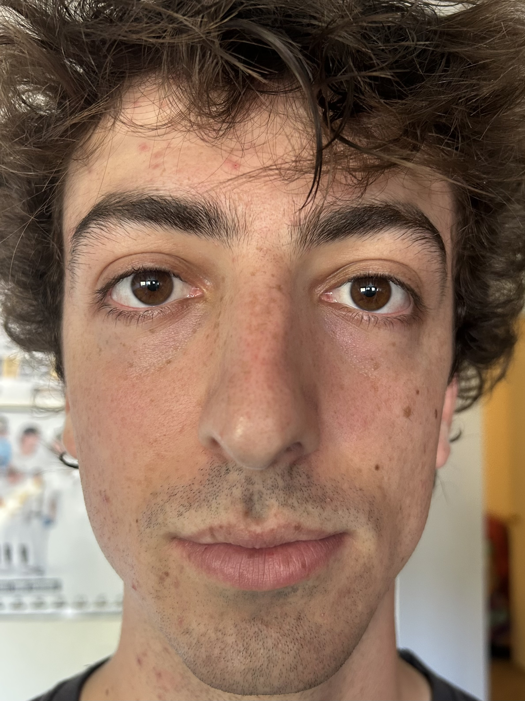
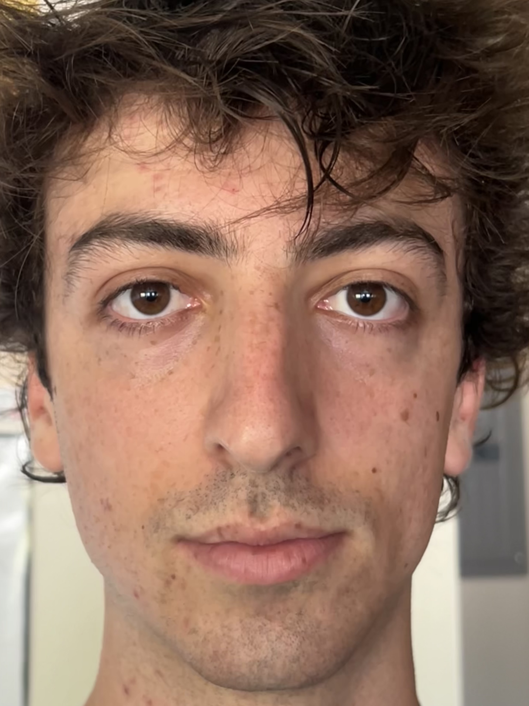
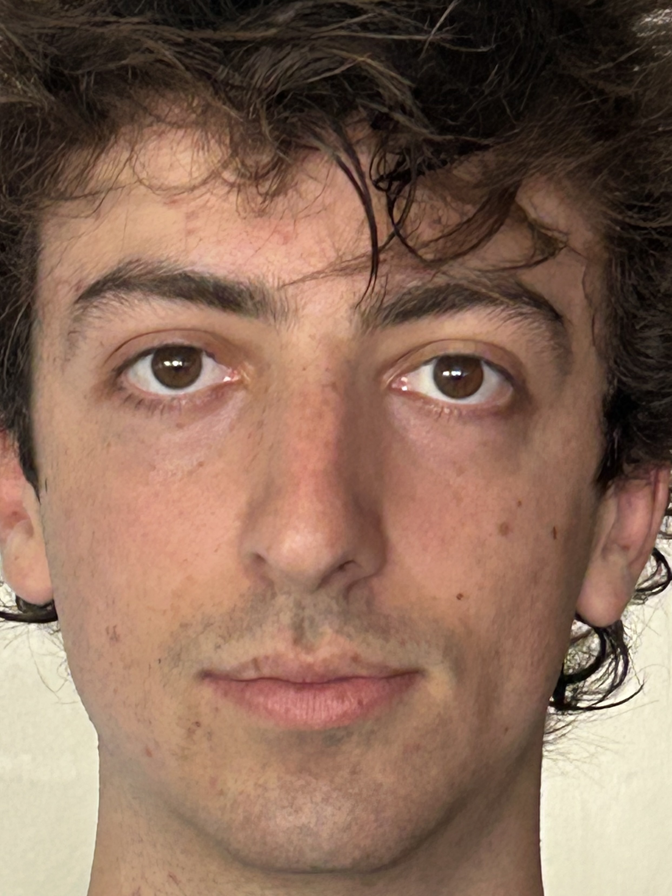
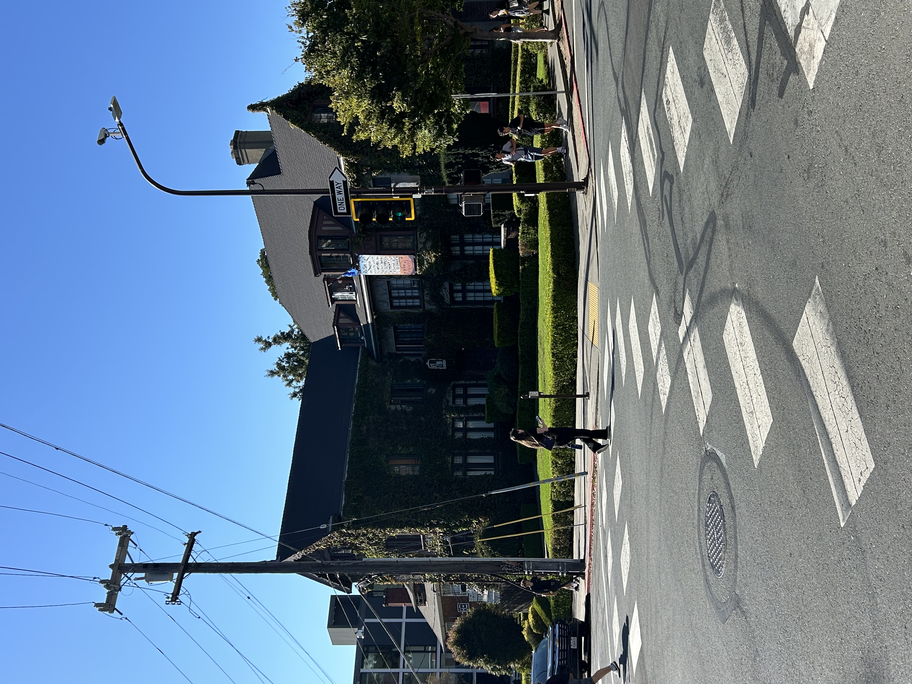
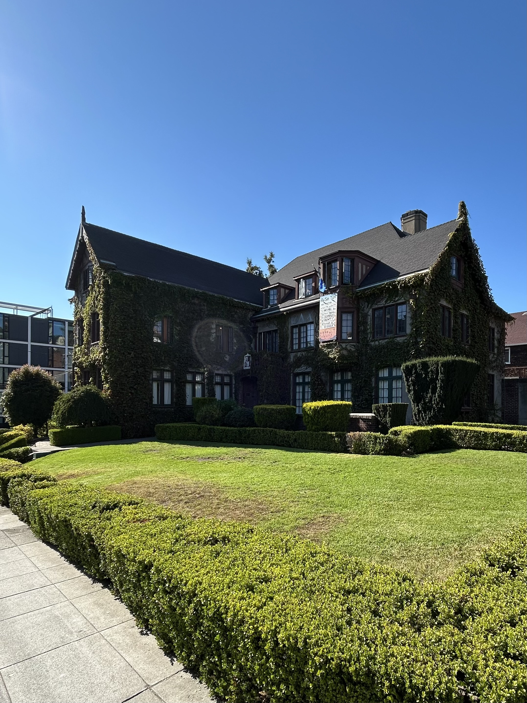

Project 0: Becoming Friends with Your Camera
Part 1: Selfie: The Wrong Way vs. The Right Way
For part 1 of this project, I had my roommate take a series of pictures of me, each one further away and more zoomed in than the last.
|  |  |  |  |
As you can see, when the zoom/focal length and distance to the subject is shorter, we wind up with a highly distorted image that almost looks like it was taken with a fisheye lens. By moving back and zooming in, we narrow the FOV and decrease the distance between my facial features relative to the camera, allowing us to capture a more complete picture of my face.
Part 2: Architectural Perspective Compression
Next, I applied these techniques to a building I walk past every day on the way to campus. To get the image on the left, I zoomed in on the house from across the street. To the get image on the right, I walked closer to the house and set the zoom on my phone such that the size of the building is approximately the same in both pictures.
|  |  |
From far away, the distance between architectural features relative to the camera is small, leading to a rather flat appearance. Getting closer to the subject allows us to get a much better sense of depth in the image, especially when it comes to things like the size of the lawn and the angle of the roof.
Part 3: The Dolly Zoom
For the final section of the project, I created a small scene on my coffee table and repeated the process from part 1, trying my best to keep the size of the pickle plushie the same in each picture. Finally, I stitched the images into a single gif to create a dolly zoom effect.

|
I am pretty pleased with the result!